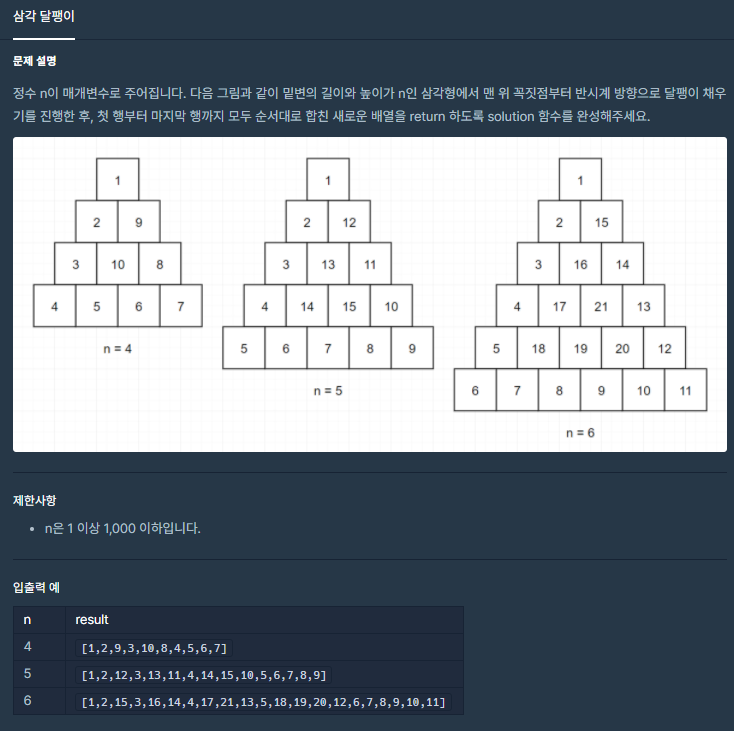
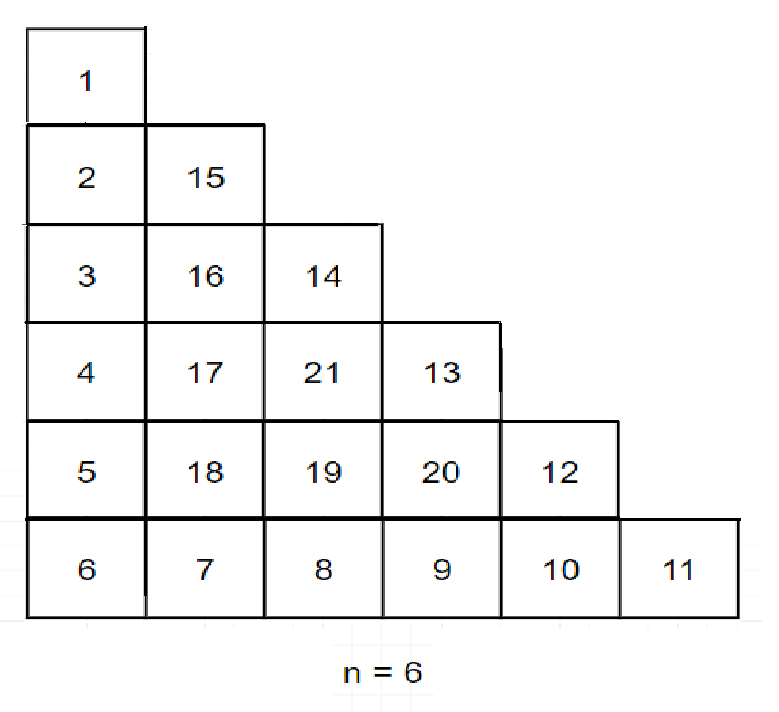
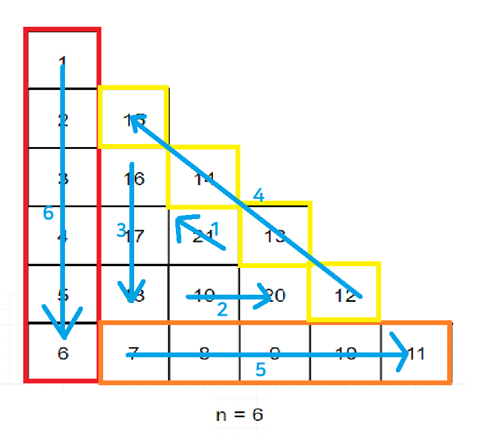

![[Level 2] 프로그래머스 삼각달팽이 코틀린 풀이](/2021/02/15/a-triangular-snail/thumbnail.png)
[Level 2] 프로그래머스 삼각달팽이 코틀린 풀이
[Level 2] 프로그래머스 삼각달팽이 코틀린 풀이
문제 소개
이번에 풀어볼 문제는 삼각달팽이입니다.

위 사진처럼 반시계방향으로 회전하면서 숫자를 배열하는데 이를 가로로 썰어서 배열로 리턴해주면 되는 문제입니다.
문제풀이
접근
먼저 모눈종이와 같은 2차원 배열 공간을 떠올리고 사진을 변형해보았습니다.

그러면 좌표평면에 얹었다고 생각하고 이동 로직을 짤 수 있습니다.

위 사진에서 알 수 있듯이 아래 방향, 우측 방향, 좌상단 방향 3개를 반복하는데 개수가 n ~ 1까지 내려갑니다.
아래 방향 -> y좌표 증가
우측 방향 -> x좌표 증가
좌상단 방향 -> x, y 둘다 감소
그렇다면 이 3가지만 신경을 쓰면 처리할 수 있습니다.
구현
먼저 입력받은 n만큼 2차원 배열을 만듭시다
1 | val arr = Array<IntArray>(n) { IntArray(n) } |
코틀린의 이차원배열은 배열 안에 배열을 넣어서 만들 수 있습니다.
그 다음 변수 x에는 0을, y에는 -1을 넣어줬습니다.
-1을 넣은 이유는 처음에 무조건 아래로 움직이면서 시작하기 때문입니다.
그럼 아까 알아냈듯이 개수가 n ~ 1까지 내려가니 반복을 돕시다.
1 | (1..n).forEach { i -> |
바깥쪽 루프는 n개의 직선으로 루프를 돌기 때문이고
안쪽 루프는 각 직선이 요소를 n ~ 1개 갖기 때문입니다.
현재 적어야할 숫자를 알기위해서 식을 만들었습니다
1 | val l = (n - i + 2..n).sum() + j + 1 |
이제 3가지를 반복하니 3으로 나눈 나머지를 이용하면 됩니다.
1 | when (i % 3) { |
그 다음 arr[y][x] = l으로 해당하는 위치에 값을 넣어줍시다.
1 | arr.flatMap { it.filter { value -> value != 0 } }.toIntArray() |
마지막으로 초기화시의 0을 없애고 하나의 배열로 합쳐주면 정답입니다!
정답 코드
1 | class Solution { |
몇일 고민하던 문제가 풀려서 좋네요 :)
출처: 프로그래머스 코딩 테스트 연습, https://programmers.co.kr/learn/challenges